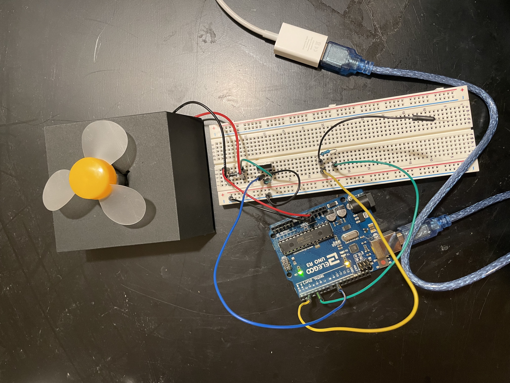
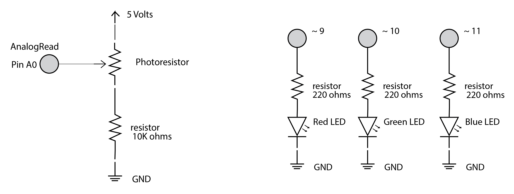

This shows the capacitive touch being used to control the motor being turned on. The motor turns on and increase and decrease in speed when the capacitor sensor is touched.

This picture shows the circuit.

This is the schematic for the circuit. The transistor can handle a max of up to 30V, therefore connecting the circuit to a power source of 5 volts is less than 30V and will be sufficient. Because of this, the current from 5 volts will be less than the max amount of current that a transistor can take due to V=IR. I used a 1 megaohm resistor for the capacitive touch part of the circuit because in order for absolute touch to activate. I used a 1 M ohms resister because I didn't need the capacitive touch to be very sensitive and wanted the sensor to be fast.
#include <CapacitiveSensor.h>
// 1 megohm resistor between pins 4 & 2, pin 2 is sensor pin, add wire, metal thing
CapacitiveSensor cs_4_2 = CapacitiveSensor(4,2);
int transistor = 9; // the PWM pin the transistor is attached to
int strength = 0; // how fast the motor is spinning
int fadeAmount = 10; // how many points the speed that the moder will fade by
void setup() {
cs_4_2.set_CS_AutocaL_Millis(0xFFFFFFFF); // turn off autocalibrate on channel 1 - just as an example
Serial.begin(9600); //
// declare pin 9 to be an output:
pinMode(transistor, OUTPUT);
}
void loop()
{
long start = millis();
long total1 = cs_4_2.capacitiveSensor(30);
Serial.print(millis() - start); // check on performance in milliseconds
Serial.print("\t"); // tab character for debug window spacing
Serial.println(total1); // print sensor output 1
delay(1); // arbitrary delay to limit data to serial port
int outputValue = map(total1, 375, 900, 0, 255); // print out the results to the Serial Monitor:
// Make the motor spin when the capacitive sensor is turned on
if(outputValue > 100) {
// set the strength of pin 9:
analogWrite(transistor, strength);
// change the strength for next time through the loop:
strength = strength + fadeAmount;
// reverse the direction of the fading at the ends of the fade:
if (strength <= 0 || strength >= 255) {
fadeAmount = -fadeAmount;
}
// wait for 10 milliseconds to see the dimming effect
delay(10);
}
}
This is the arduino code that I used to make the motor turn on and increase and decrease in speed when the capacitor sensor is touched. The code is commented on the code snippit.